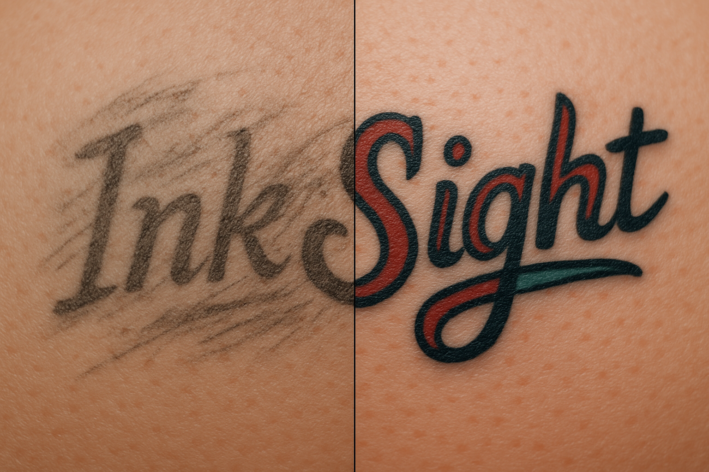

# InkSight Codebase
This canvas holds the current key files for the InkSight website so we can update them in place without re‑pasting every time.
---
## 1. `index.html`
```html
InkSight

Preview Your Tattoo
Upload a photo of your body part and select the area for your tattoo.
🎉 Your custom design is here! You can download it or choose an artist below to chat with.
Your Preview Is Ready
You can download your tattoo mockup below. Remember: we do not store your images on our server.
```
```
## 2. `css/style.css`
```css
/* Global reset and layout */
body { … }
.container { … }
.cropper-container .cropper-view-box, … { … }
.suggestions { … }
/* Banner styling */
.banner-container { … }
.banner-container .banner-image { … }
/* etc. */
```
## 3. `js/main.js`
```js
import { setupCropper } from './initCropper.js';
import { attachPromptButtons } from './promptHelpers.js';
const USE_FAKE_API = true;
…
submitBtn.addEventListener('click', async () => {
// fetch & fakeGenerateTattoo
// inject preview & artistList
});
```
---
_We can now update any of these files in place. Let me know which part you want to edit next!_